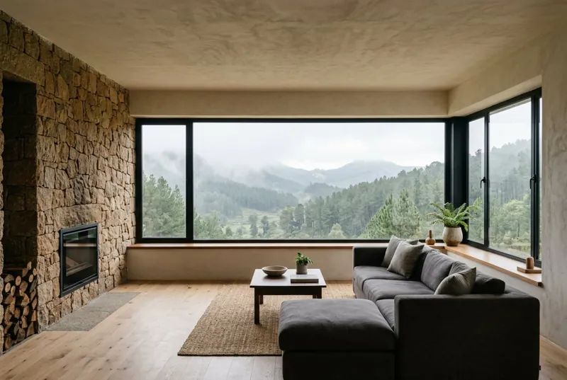
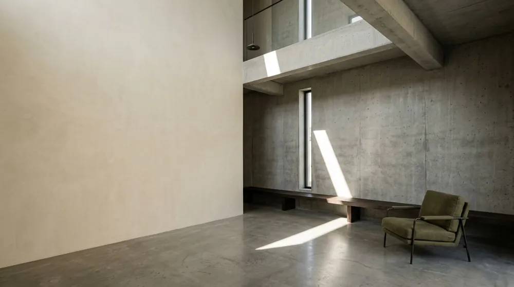
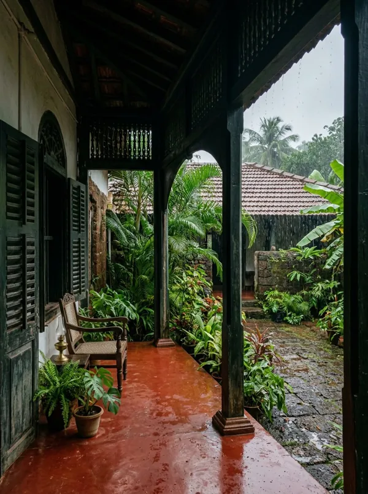
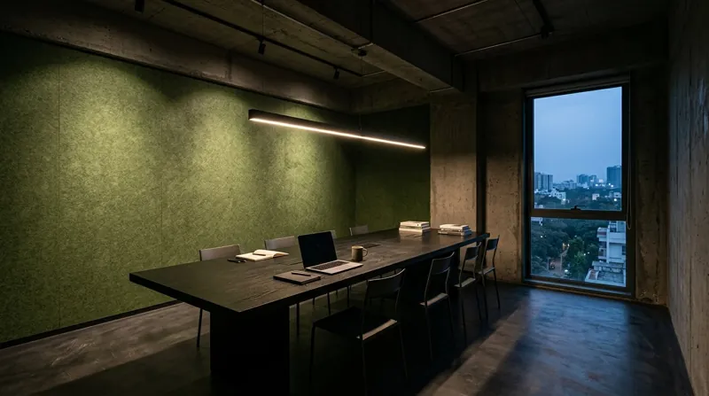
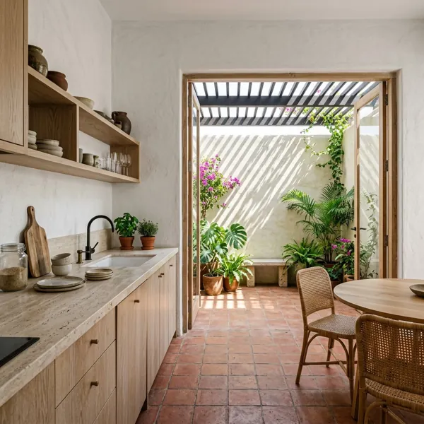
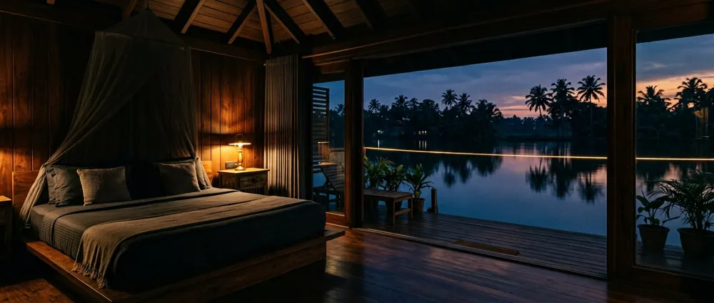
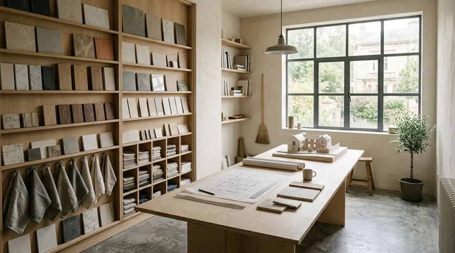

SPACES THAT FEEL LIKE YOURS.
We design considered interiors where architecture, material and everyday life meet.
SCROLL TO EXPLORE ↓DRAWING 01 — GROUND FLOOR / NOT TO SCALE
Spatial diagram
CIRCULATIONLIGHT
A fictional plan, drawn for this concept. Every project begins with a diagram like this: where light enters, how people move, where the day slows down.
§ 01 — POSITION
INTERIORS ARE NOT DECORATION. THEY ARE HOW A SPACE IS LIVED.
Atelier Nord creates residential and commercial interiors through a balance of architecture, material, light and everyday function.
SELECTED WORK
05 PROJECTS / 2025 — 2026



A city apartment reorganised around a single planted void. Light from above, terracotta underfoot.

§ 03 — MATERIAL LIBRARY
MATERIAL / LIGHT / TEXTURE
M-01 / TRAVERTINE / HONED, UNFILLED
STONE
Cool to touch, warm to look at. We use it where a surface should feel permanent — thresholds, counters, the base of a wall.
M-02 / SMOKED OAK / OILED
TIMBER
The material that softens a room. Floors, joinery and the things hands touch every day.
M-03 / LIME PLASTER / TROWELLED
PLASTER
Breathes, ages, holds light differently at every hour. Walls that are never quite one colour.
M-04 / BLACKENED STEEL / BRUSHED
METAL
Thin, precise lines. Used sparingly for frames, handles and edges that need to be exact.
M-05 / NATURAL LINEN / 320 GSM
TEXTILE
What makes a space quiet. Curtains, upholstery and the acoustics nobody notices until they are missing.
§ 04 — METHOD
FROM IDEA
TO SPACE.
- 01
OBSERVE
Understanding the architecture, surroundings and people who will use the space.
- 02
FRAME
Defining the spatial concept, circulation and atmosphere.
- 03
MATERIALISE
Selecting materials, textures, light and details.
- 04
BUILD
Translating the concept into a finished environment.
§ 05 — STUDIO
A SMALL STUDIO
WITH A LARGE
ATTENTION TO DETAIL.
Atelier Nord is an independent interior design studio focused on residential, hospitality and carefully considered commercial spaces.
We work in small teams, draw everything by hand first, and stay involved until the last piece of furniture is placed. A fictional studio, described honestly.

GOOD DESIGN DOESN'T ASK FOR ATTENTION. IT EARNS IT.
§ 06ATELIER NORD2026
§ 07 — JOURNAL
NOTES FROM
THE STUDIO
- N.01Light as ArchitectureHow natural light changes the perception of interior space.
- N.02Material MemoryWhy stone, timber and plaster create a different sense of time.
- N.03Designing for Everyday LifeThe relationship between beautiful spaces and practical living.
ARTICLE PAGES NOT INCLUDED IN THIS CONCEPT.
HAVE A SPACEIN MIND?
Tell us what you're working on, where you're starting and what you want the space to become.
START A CONVERSATION ATELIER NORD hello@atelier-nord.example +00 0000 000 000 Bengaluru / Goa / Kerala FICTIONAL DEMO CONTACT DETAILS — NO MESSAGES ARE RECEIVED.